2. 编译gtest
1. unzip gtest-1.6.0.zip2. cd gtest-1.6.0
3. ./configure
4. make
在lib目录下生成了两个文件,还有一个隐藏目录.libs
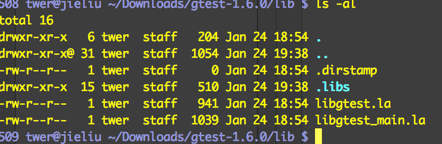

3. 新建一个appcode 命令行程序
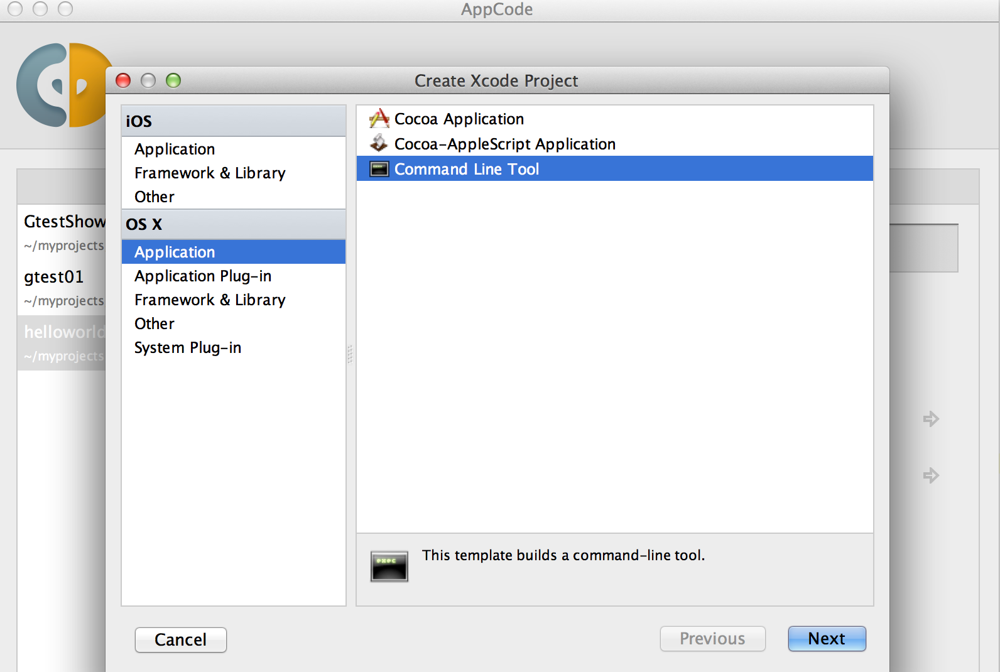type选c++
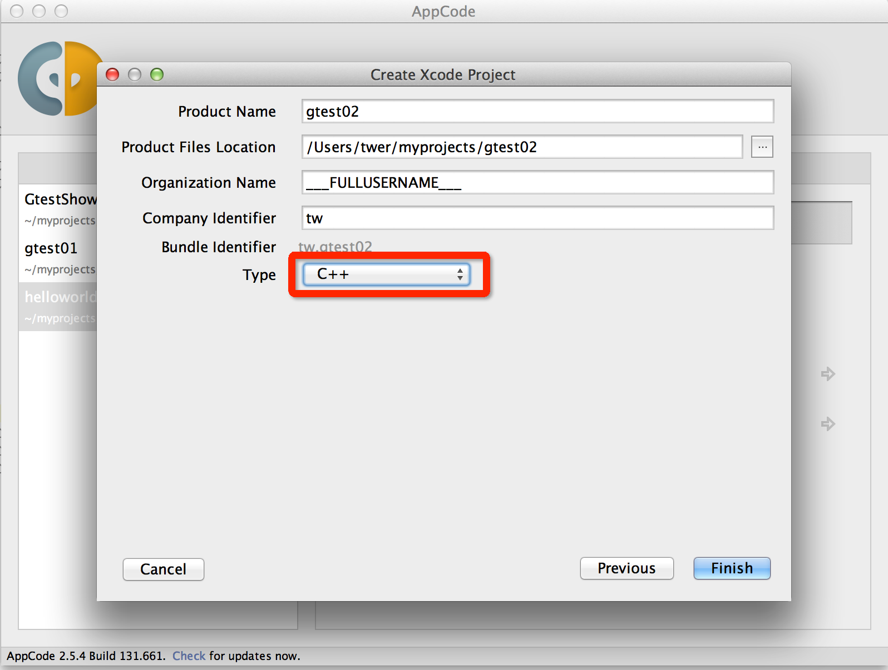
4. 添加boost库文件和gtest库文件
右键点击工程-》add-》FrameWorks and Libraries 添加gtest库和boost库(boost库所有dylib都加上，gtest可以只加libgtest.a和libgtest.0.dylib)
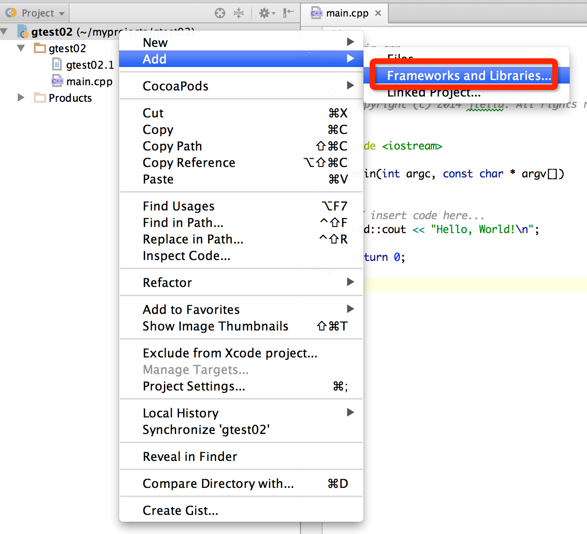
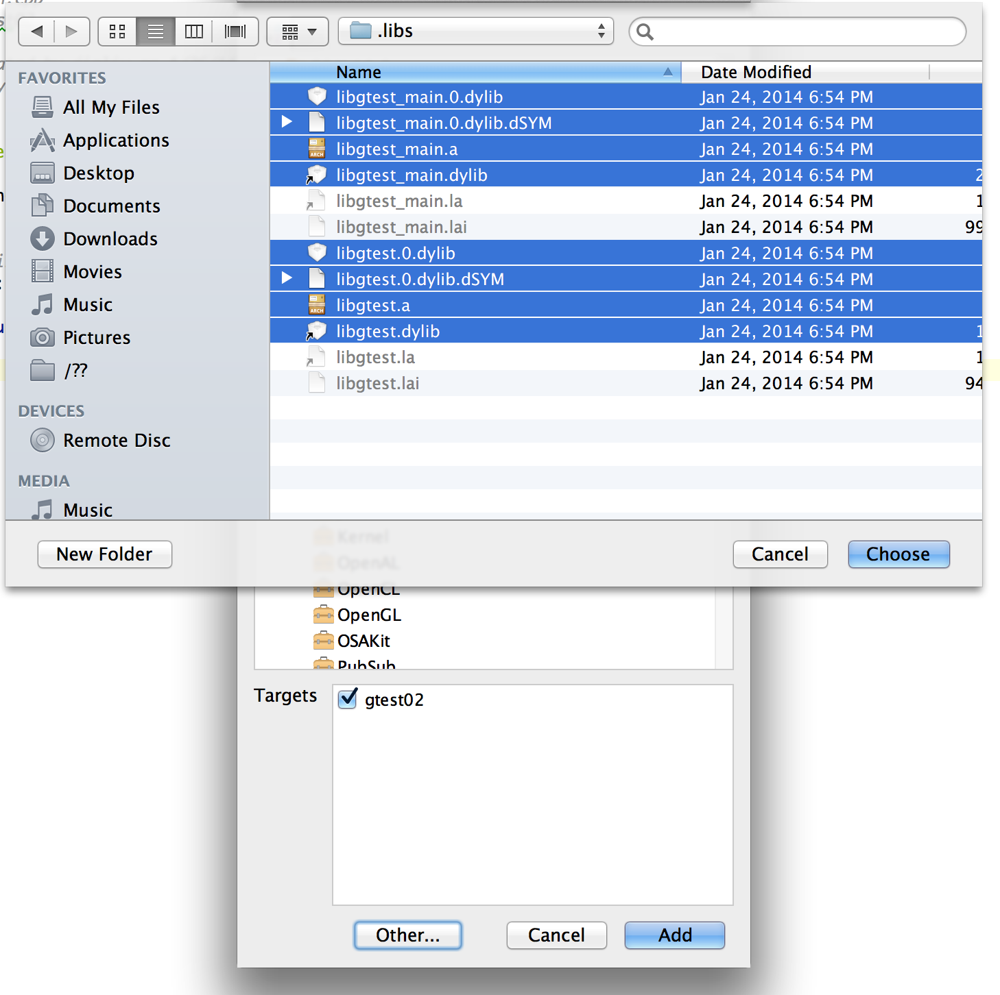
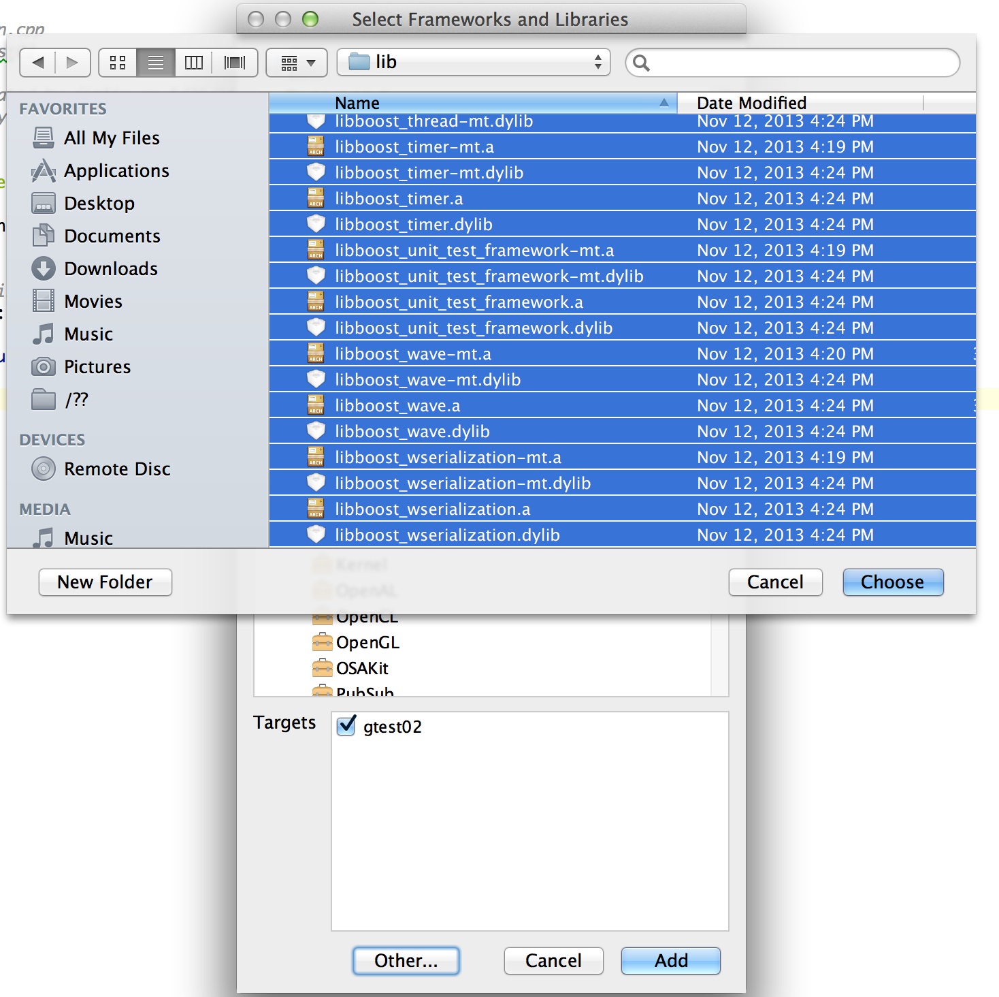
添加完成后如图：
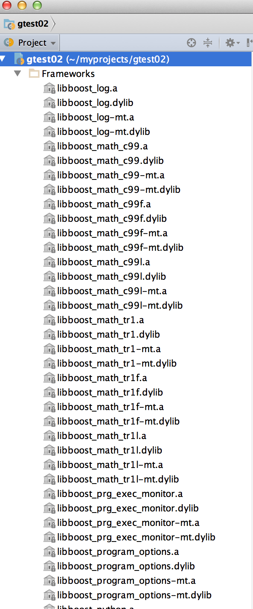
5. 设置头文件路径和库文件路径
command+; -> Header Search Path 添加以下路径（根据自己机器实际路径填写）
/Users/twer/Downloads/gtest-1.6.0/include
/usr/local/Cellar/boost/1.55.0/include
/usr/local/Cellar/boost/1.55.0/include/boost
/usr/local/Cellar/boost/1.55.0/include/boost/tr1
在Library Search Paths添加以下路径
/Users/twer/Downloads/gtest-1.6.0/lib/.libs
/usr/local/Cellar/boost/1.55.0/lib
6. 写一个被测试函数
functions.h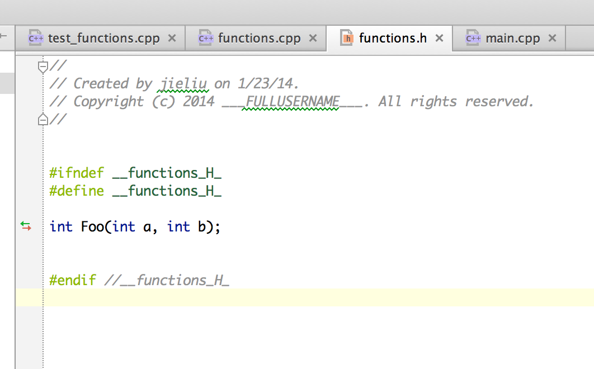
functions.cpp
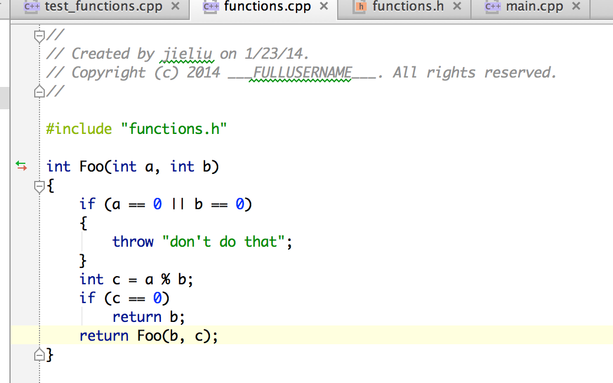
用gtest测试Foo
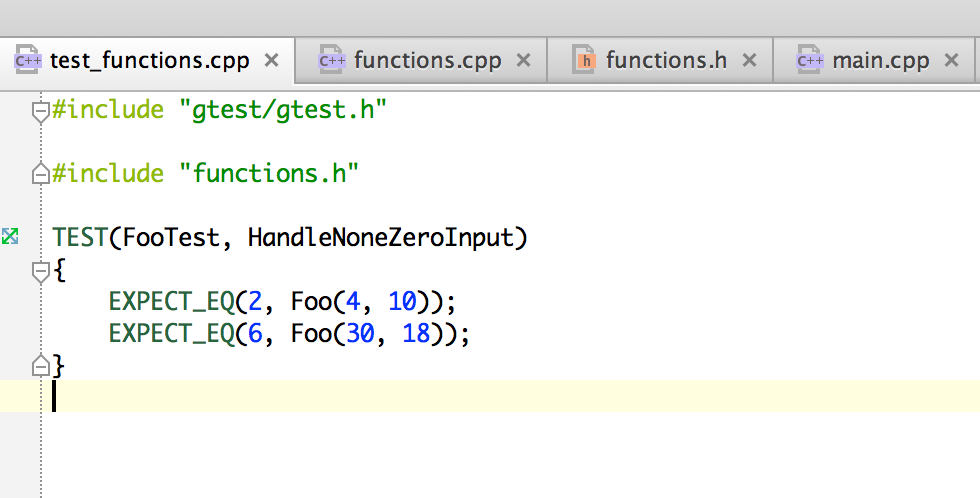
alt + shift + f10 编译运行。
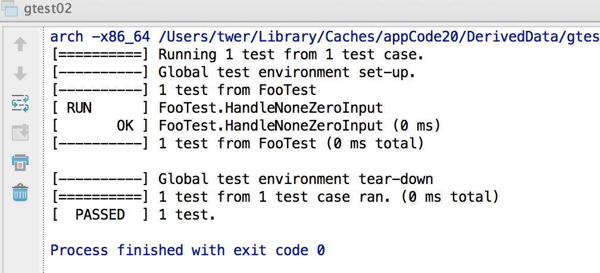